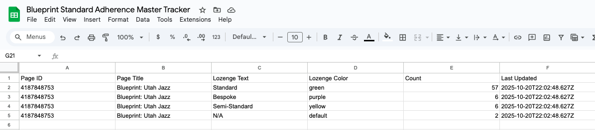
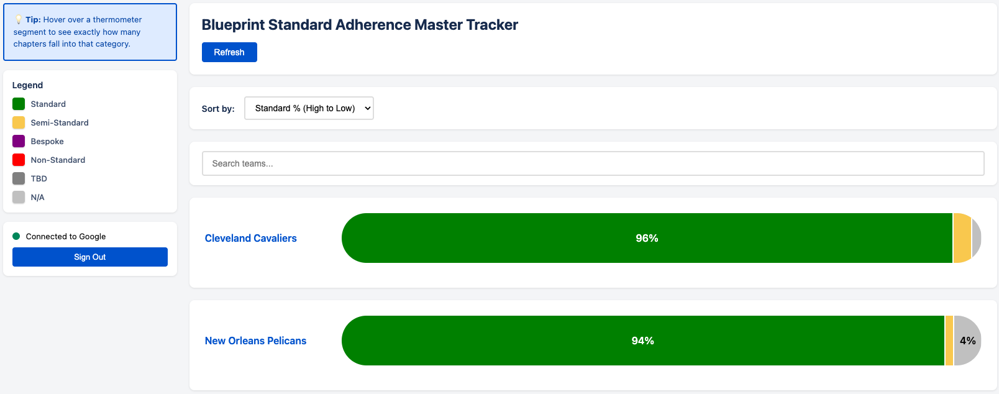
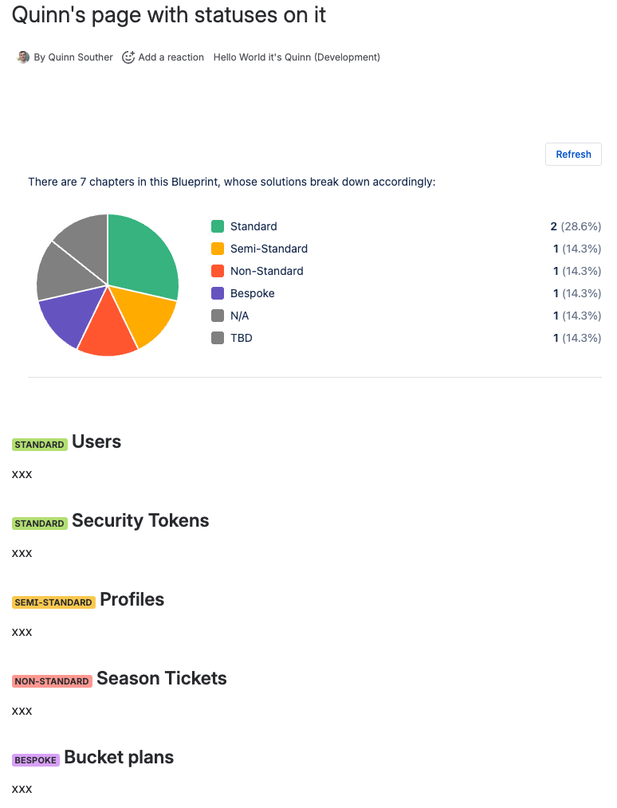
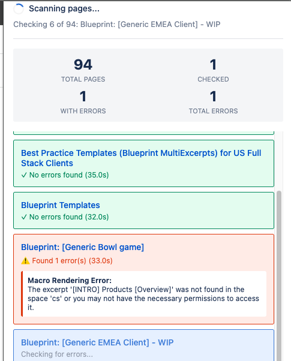

Blueprint Standard Adherence Master Tracker
Automated cloud function that scans ~70 Confluence Blueprint pages for status lozenges, counts them, and exports to Google Sheets. Runs daily at 9 AM ET.
☁️ Google Cloud Function (Automated)

Blueprint Standard Adherence Thermometers
Jira dashboard gadget that displays thermometer visualizations for tracking blueprint standard adherence with real-time compliance metrics.
🔧 Forge App (Install to Jira) ⬆️ Uses Master Tracker Data

Blueprint Standards Chart (Custom UI React)
Confluence macro with custom UI for displaying Blueprint standard adherence data with configurable charts.
🔧 Forge App (Install to Confluence)
Confluence JSON Editor
Chrome extension for editing Confluence page content via REST API. Provides side panel UI for direct JSON content editing.
🧩 Chrome Extension (Manual Install)

Confluence Macro Error Checker
Dual implementation: Python CLI tool and Chrome extension for detecting macro rendering errors across Confluence pages and exporting results.
🐍 Python Script (Manual Run) 🧩 Chrome Extension (Manual Install)